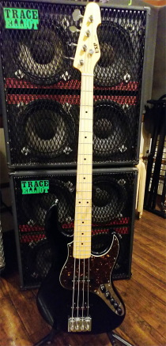
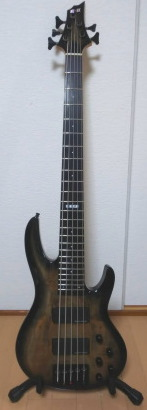
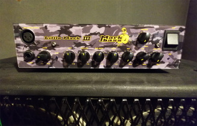
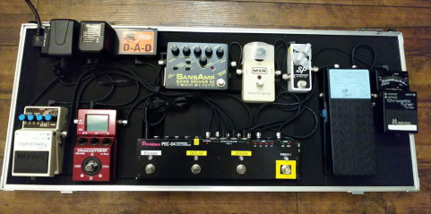
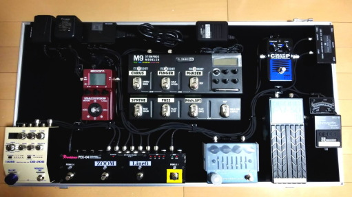

TOOLBOX
| ÇaÇ`ÇrÇr | |
 |
ESP AMAZE-AS-SL5/R BODY:Swamp Ash (Thickness 42mm) NECK:Hard Maple GRIP SHAPE:Slim U FINGERBOARD:Rosewood RADIUS:Compound (240-400R) SCALE:889mm NUT:Unbleached Bone (46mm) FRET:JESCAR FW55090-NS, 21frets INLAY:Black Acrylic Dot JOINT:Bolt-on TUNER:GOTOH GB-11W BRIDGE:GOTOH 404BO-5 w/String-thru-body PICKUPS:(Neck) ESP Custom Lab CL-P-J5-1n, (Bridge) ESP Custom Lab CL-P-J5-1b PARTS COLOR:Chrome CONTROLS:Master Volume (w/EQ Thru SW), PU Balancer, 3 BAND EQ (ESP CINNAMON) COLOR:Black |
 |
E-II BTL-5 BODY:(Top)Spalted Maple, (Back)Alder NECK:Hard Maple 3P GRIP SHAPE:Thin U FINGERBOARD:Ebony RADIUS:305R SCALE:864mm NUT (WIDTH):Bone (46mm) INLAY:Dot, 12th at ESP FRET:XJ, 24frets CONSTRUCTION:Bolt-on(T-5 Ultimate Access) TUNER:GOTOH GB707E BRIDGE:HIPSHOT Style ÅgAÅh Brass PICKUPS:(Neck) Seymour Duncan SSB-5n, (Bridge) Seymour Duncan SSB-5b PARTS COLOR:Black CONTROLS:Master Volume(w/Preamp thru SW), PU Balancer, 3-Band EQ (ESP CINNAMON) COLOR:Black Natural Burst |
| Ç`ÇlÇo |
| Markbass /Little Mark áV  |
| ÇdÇeÇeÇdÇbÇs | |
| EFFECTÅ@BOARD(Previous specifications) | |
 |
Xotic SP CompressorÅAMXR Micro Amp TECH21 Sansamp Bass Driver DI ZOOM MS-60BÅABOSS DD-3 BOSS FV-50H (F-sugar MOD) etc |
| EFFECTÅ@BOARD(Currrent specifications) | |
|  |
FREE THE TONE JB-21
BOSS TU-3W
EBS MultiComp
BOSS FV-50H(F-SUGAR Modified)
Line6 M9
Darkglass Electronics ALPHA OMEGA ULTRA
ZOOM MS-60B
Providence PEC-04
BOSS DD-200
FREE THE TONE PT-5D
|
| BACKÅ@TO |